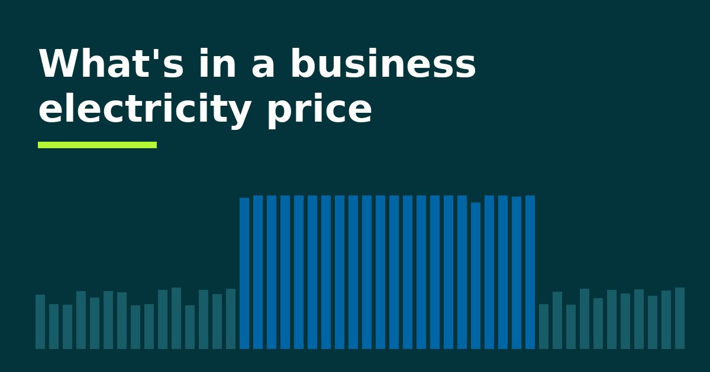

Non-energy charges are everything on a business electricity bill apart from the wholesale energy: network charges (TNUoS, DUoS and BSUoS), policy costs (the Renewables Obligation, Contracts for Difference, Capacity Market, nuclear RAB and Feed-in Tariffs) and the Climate Change Levy. Some are charged per unit, some per day and some only at certain times, so when you use electricity can matter as much as how much.
Network charges
Transmission (TNUoS)
Pays for the high-voltage national transmission network. For business sites, the main part is a fixed charge per site per day (the non-locational demand residual), set by charging band. For low-voltage sites with an agreed capacity, the band depends on that capacity.1 The bands stay fixed for the current transmission price control.1
| Band | Agreed capacity | £ per site per day, 2026/27 | £ a year |
|---|---|---|---|
| LV1 | up to 90 kVA | 5.80 | £2,116 |
| LV2 | 90 to 150 kVA | 11.51 | £4,202 |
| LV3 | 150 to 250 kVA | 14.38 | £5,249 |
| LV4 | over 250 kVA | 38.18 | £13,936 |
Half-hourly angle: a fixed daily charge doesn't change with when you use electricity, but your band depends on your agreed capacity. See supply capacity.
Distribution (DUoS)
Pays for your local distribution network, run by the network operator for your region (the first two digits of your MPAN tell you which). Charges are a mix of unit rates, capacity charges and daily fixed charges, plus a fixed "residual" charge per site per day, banded for business sites since Ofgem's Targeted Charging Review.2,3 Unit rates vary by time band, often called red, amber and green, and each operator sets its own times and rates.3
Half-hourly angle: moving use out of the most expensive time band, and keeping peak demand within your agreed capacity, both reduce distribution charges. Your half-hourly data shows how much falls in each band.
Balancing (BSUoS)
Covers the National Energy System Operator's (NESO's) costs of balancing the electricity system. Since April 2023 it has been a fixed tariff per MWh, set in advance for six-month periods.4 It is £13.74/MWh for April to September 2026 and £12.49/MWh for October 2026 to March 2027.4
Policy costs
Renewables Obligation (RO)
Suppliers must present Renewables Obligation Certificates for each MWh they supply, or pay a buy-out price instead. For 2026/27 the level is 0.472 certificates per MWh in Great Britain and the buy-out price is £69.34, which works out at about £32.73/MWh.5,6 Energy-intensive industries are fully exempt from these costs.5
Contracts for Difference (CfD)
CfDs give low-carbon generators a fixed price (the strike price). When the market price is below it, generators are paid the difference, funded by a levy on suppliers. When the market price is above it, generators pay the difference back.7 So the levy falls when wholesale prices rise. It was £10.26/MWh in April to June 2026, was cut in stages from August, and was £0/MWh from 5 November 2026. It is set at £2.98/MWh for January to March 2027.8
Capacity Market (CM)
Pays capacity providers to make sure enough reliable capacity is available, for example during periods of low wind and high demand.9 Payments for October 2026 to September 2027 total £3.47 billion.8 Suppliers pay according to their customers' share of demand between 4pm and 7pm on working days from November to February.9 Dividing the total by the demand forecast for those hours gives about £308 for each MWh used in them (our calculation).8
Half-hourly angle: this is the charge most affected by timing. Cutting use between 4pm and 7pm on winter working days cuts it directly.
Solar won't do much here: in midwinter the sun sets around 4pm across most of the UK, so panels produce little or nothing in these hours. Solar cuts the charges you pay per unit instead. To see how much of a solar system's output your site would use, try the analyser's Solar tab or our sister site, the UK Solar Calculator.
Nuclear RAB
Funds the construction of new nuclear power stations under the Regulated Asset Base model; the first is Sizewell C. It is collected from suppliers in the same way as the CfD levy.10 The rate was £3.75/MWh from October 2026, rising to £5.15/MWh from 6 December 2026, and is £3.68/MWh for January to March 2027.8
Feed-in Tariffs (FiT)
The scheme that pays owners of small-scale renewable installations, such as rooftop solar, for the electricity they generate. It closed to new applicants on 1 April 2019, but payments to existing installations continue and are funded through suppliers.11
Taxes
Climate Change Levy (CCL)
A tax on energy used by businesses. The electricity rate is 0.801p/kWh from 1 April 2026 and 0.827p/kWh from 1 April 2027. Holders of a climate change agreement get a 92% discount on electricity.12
VAT
Most business electricity carries VAT at the standard rate of 20%. Charities' non-business use and sites using no more than 33 kWh a day on average qualify for a reduced rate, which is 0% in Great Britain from 1 October 2026 to 30 June 2027.13
Reliefs for energy-intensive businesses
Energy-intensive industries are exempt from the indirect costs of the Renewables Obligation.5 From 2027, the British Industrial Competitiveness Scheme will also cut electricity costs by up to £40/MWh for eligible manufacturers, exempting them from the indirect costs of the Renewables Obligation, Capacity Market and Feed-in Tariffs.14
Sources
- NESO: Final TNUoS tariffs for 2026/27 (January 2026) and tables
- Ofgem: Targeted Charging Review decision (December 2019)
- Ofgem: Distribution use of system charging, managing the effects of surplus residual charges, call for input (July 2024)
- NESO: BSUoS final tariffs for 2026/27 (December 2025)
- Department for Energy Security and Net Zero: Calculating the level of the Renewables Obligation for 2026 to 2027 (29 September 2025)
- Ofgem: Renewables Obligation buy-out price and mutualisation threshold and ceilings 2026 to 2027 (31 March 2026)
- EMR Settlement: Contracts for Difference explained
- EMR Settlement: Key figures for payments 2026/27 (CfD and nuclear RAB levy rates, Capacity Market payments)
- EMR Settlement: G15 Capacity Market supplier payments guidance
- EMR Settlement: Nuclear RAB
- Ofgem: Feed-in Tariffs (FIT)
- HM Revenue and Customs: Climate Change Levy rates (updated 27 November 2025)
- HM Revenue and Customs: VAT on fuel and power (VAT Notice 701/19, updated 28 October 2026)
- Department for Business and Trade: British Industrial Competitiveness Scheme (updated 1 October 2026)
Questions people ask
What is TNUoS on my electricity bill?
Transmission Network Use of System charges pay for the national high-voltage grid. For business sites the main part is a fixed charge per site per day, set by band; for low-voltage sites with an agreed capacity the band depends on that capacity.
What is DUoS?
Distribution Use of System charges pay for your local network. They combine unit rates that vary by time of day, capacity charges and fixed daily charges, set by the network operator for your region.
Why did the CfD levy fall to zero?
When wholesale prices are above a CfD generator's strike price, the generator pays the difference back, which reduces the levy. The CfD interim levy rate was £0/MWh from 5 November 2026.
When is the Capacity Market charge calculated?
On electricity used between 4pm and 7pm on working days from November to February.
Read next

What's in a business electricity price
The five parts of the price, with a worked example.
Read the guide
Ten years of business electricity prices
From 2015 to 2026, and what drove the changes.
Read the guide
Where non-energy costs are heading
Published forecasts and decisions for 2027 and beyond.
Read the guide